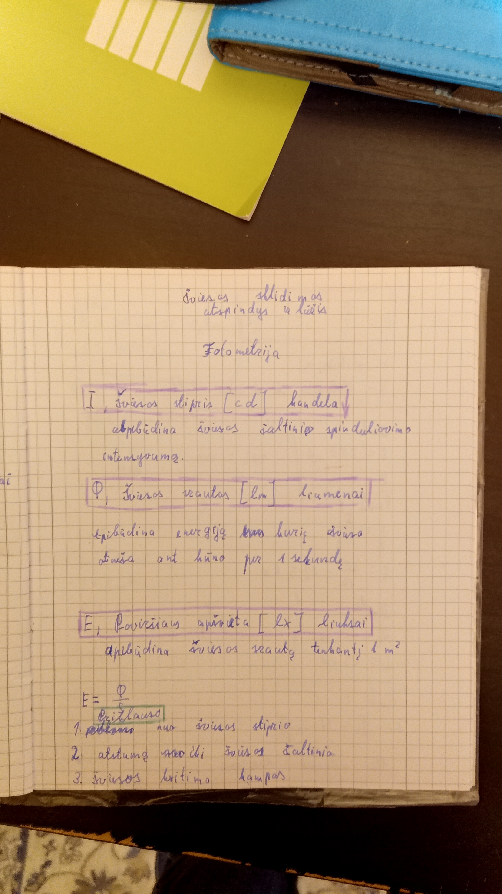

Fizika
Fotometrija

Uždaviniai
1. Virš stalo per vidurį 2 m aukštyje kabo 100 cd elektros lemputė. Apskaičiuokite stalo po lempute paviršiaus apšvietą.
2.Koks šviesos srautas krinta statmenai 50 cm² ploto paviršių, esantį už 3 m nuo 175 cd stiprio šviesos šaltinio ?
Atsakymai